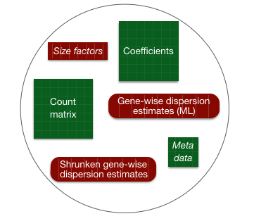

# Create DESeq2Dataset object
dds <- DESeqDataSetFromTximport(txi, colData = meta, design = ~ sampletype)Gene-level differential expression analysis with DESeq2
Approximate time: 30 minutes
Learning Objectives
- Demonstrate the use of the design formula with simple and complex designs
- Construct R code to execute the differential expression analysis workflow with DESeq2
Differential expression analysis with DESeq2
The final step in the differential expression analysis workflow is fitting the raw counts to the Negative Binomial (NB) model and performing the statistical test for differentially expressed genes. In this step we essentially want to determine whether the mean expression levels of different sample groups are significantly different.

The DESeq2 paper was published in 2014, but the package is continually updated and available for use in R through Bioconductor. It builds on good ideas for dispersion estimation and use of Generalized Linear Models from the DSS and edgeR methods.
Differential expression analysis with DESeq2 involves multiple steps as displayed in the flowchart below in blue. Briefly, DESeq2 will model the raw counts, using normalization factors (size factors) to account for differences in library depth. Then, it will estimate the gene-wise dispersions and shrink these estimates to generate more accurate estimates of dispersion to model the counts. Finally, DESeq2 will fit the negative binomial model and perform hypothesis testing using the Wald test or Likelihood Ratio Test.

Note
DESeq2 is actively maintained by the developers and continuously being updated. As such, it is important that you note the version you are working with. Recently, there have been some rather big changes implemented that impact the output. To find out more detail about the specific modifications made to methods described in the original 2014 paper, take a look at this section in the DESeq2 vignette.
Additional details on the statistical concepts underlying DESeq2 are elucidated nicely in Rafael Irizarry’s materials for the EdX course, “Data Analysis for the Life Sciences Series”.
Running DESeq2
Prior to performing the differential expression analysis, it is a good idea to know what sources of variation are present in your data, either by exploration during the QC and/or prior knowledge. Once you know the major sources of variation, you can remove them prior to analysis or control for them in the statistical model by including them in your design formula.
This step is critical as each additional factor in your design formula reduces your power. HOWEVER, failing to include important sources of variation can give you inaccurate results.
Design formula
A design formula tells the statistical software which sources of variation to test for. This includes both your factor of interest as well as any additional covariates that are sources of variation. For example, if you know that sex is a significant source of variation in your data, then sex should be included in your model. The design formula should have all of the factors in your metadata that account for major sources of variation in your data.
For example, suppose you have the following metadata:

If you want to examine the expression differences between treatments, and you know that major sources of variation include sex and age, then your design formula would be:
design = ~ sex + age + treatment
The tilde (~) should always precede your factors and tells DESeq2 to model the counts using the following formula. Note the factors included in the design formula need to match the column names in the metadata.
Does the order of variables matter?
In short, the order of variables in your design formula will not change the final results (i.e., the coefficients returned are the always the same). Typically, it has been best practice to list the variable that is your main effect in the last position of your design formula. In this way, the default result that is returned to you when using the results() function will be for your main effect.
Exercises
- Suppose you wanted to study the expression differences between the two age groups in the metadata shown above, and major sources of variation were
sexandtreatment, how would the design formula be written? - Based on our Mov10
metadatadataframe, which factors could we include in our design formula? - What would you do if you wanted to include a factor in your design formula that is not in your metadata?
Complex designs
DESeq2 also allows for the analysis of complex designs. You can explore interactions or ‘the difference of differences’ by specifying for it in the design formula. For example, if you wanted to explore the effect of sex on the treatment effect, you could specify for it in the design formula as follows:
design = ~ sex + age + treatment + sex:treatment
There are additional recommendations for complex designs in the DESeq2 vignette. In addition, Limma documentation offers additional insight into creating more complex design formulas.
Note
Need help figuring out what information should be present in your metadata? We have additional materials highlighting bulk RNA-seq planning considerations. Please take a look at these materials before starting an experiment to help with proper experimental design.
MOV10 DE analysis
Now that we know how to specify the model to DESeq2, we can run the differential expression pipeline on the raw counts.
To get our differential expression results from our raw count data, we only need to run 2 lines of code!
First we create a DESeqDataSet as we did in the ‘Count normalization’ lesson and specify the txi object which contains our raw counts, the metadata variable, and provide our design formula:
Then, to run the actual differential expression analysis, we use a single call to the function DESeq().
# Run analysis
dds <- DESeq(dds)By re-assigning the results of the function back to the same variable name (dds), we can fill in the slots of our DESeqDataSet object.

Everything from normalization to linear modeling was carried out by the use of a single function! This function will print out a message for the various steps it performs:
estimating size factorsestimating dispersionsgene-wise dispersion estimatesmean-dispersion relationshipfinal dispersion estimatesfitting model and testingWe will discuss what is occurring in each of these steps in the next few lessons, but the code to execute these steps is encompassed in the two lines above.
Note
There are individual functions available in DESeq2 that would allow us to carry out each step in the workflow in a step-wise manner, rather than a single call. We demonstrated one example when generating size factors to create a normalized matrix. By calling DESeq(), the individual functions for each step are run for you.
Exercise
Let’s suppose our experiment has the following metadata:
| genotype | treatment | |
|---|---|---|
| sample1 | WT | ev |
| sample2 | WT | ev |
| sample3 | WT | ev |
| sample4 | WT | ev |
| sample5 | KO_geneA | ev |
| sample6 | KO_geneA | ev |
| sample7 | KO_geneA | ev |
| sample8 | KO_geneA | ev |
| sample9 | WT | treated |
| sample10 | WT | treated |
| sample11 | WT | treated |
| sample12 | WT | treated |
| sample13 | KO_geneA | treated |
| sample14 | KO_geneA | treated |
| sample15 | KO_geneA | treated |
| sample16 | KO_geneA | treated |
How would the design formula be structured to perform the following analyses?
Test for the effect of
treatment.Test for the effect of
genotype, while regressing out the variation due totreatment.Test for the effect of
genotypeon thetreatmenteffects.